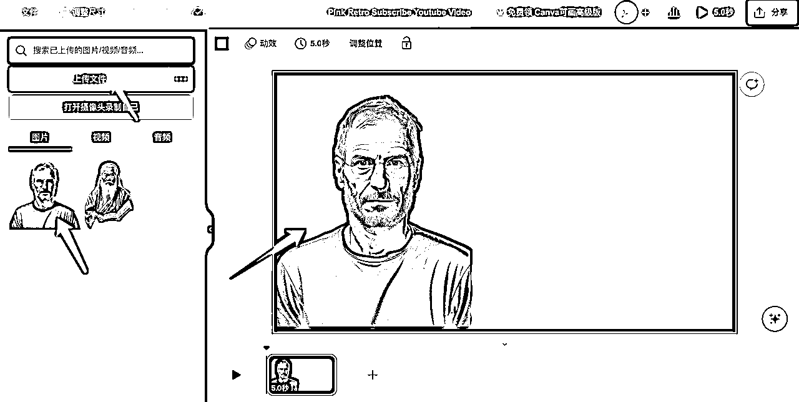

来源：https://yuanpinco.feishu.cn/docx/YMfEdDE6WoqVg3xJL4xcRLjYnge
大家好，我是翔叔，一名产品狗，目前在二奢赛道搞电商
昨天看到一条风向标，竟然被加了精华，生财亦仁老板说是百万量级的生意，那果断搞一下
星球链接如下：
https://wx.zsxq.com/mweb/views/topicdetail/topicdetail.html?topic_id=811511842282282&group_id=1824528822&inviter_id=8424844282
看不到链接的看如下截图：
讲的是YouTube上有人专门制作名人名言视频，关注110万，收入不菲啊
这个账号之前就有关注，又特地去查了下，看他们的简介说明
他们说自己是个小团队，用的不是AI，那我试着用AI做了下，跟原视频不一样，但形似，圈友可根据自己的想法做调整，这里只提供思路
先看下最终效果：
下面是实操步骤！注意看
我用的是MJ，尝试过用Leonardo.AI，但出来的效果不太符合我想要的，个人还是更倾向MJ，纯个人喜好，其实创造人物，用什么AI绘画工具都可以，哪怕是国内的，比如无界AI、MewX AI、触手AI等等
两种方式：
一种是直接自己描述，其实也比较简单，一个人、纯色背景、穿着描述，我拿乔布斯举例
Steve Jobs, in a black T-shirt, facing us photo realistic, exquisite detail, 8K --s 750
出来效果还不错，我选的第二张（乔老爷子真是太有魅力了！）
第二种方式就是，拿别人的图，直接放到MJ里/describe下，查看关键词，做下调整再去试，效果一样很OK
为什么要去背景？因为接下来要做横版图片
这里我用的是
photoroom：https://www.photoroom.com/background-remover
直接一键去背景，非常方便，当然还有很多在线去背景的工具，可以直接百度/Google搜索关键词即可
工具：canva
搜索：YouTube video/缩略图都行
找一个合适的模板或者不用也行，我是没用模版，简单点
第一步，调一个纯黑色背景
第二步，上传前面去除背景的图片
第三步，移动图片到右侧，调整位置
第四步，点击右上角分享，下载png

这个简单，网上搜，或者直接问Chatgpt，有一大堆，要注意根据自己的定位来
名言？情感语录？风水？等等
中文？英文？看情况
我这里直接让GPT给我推荐乔布斯的经典语录
这里推荐几个在线文生音：
在线免费文字转语音 - TTSMaker | 马克配音
Text To Speech - 在线文本转语音
Narakeet - Easily Create Voiceovers and Narrated Videos Using Realistic Text to Speech!
我用的第一个TTSMaker，找一个合适音色，把语录放进去，生成mp3导出
补充说明：
如果对人物音色要求比较高的话，可以用国外一款叫elevenlabs，支持自定义添加声音，它会根据你上传的voice范例，进行声音clone，貌似要付费，具体的我没试过，感兴趣的圈友自行尝试
如果对音色要求不高的话，我上面几款在线TTS足够用了
这里推荐几款：D-ID、HeyGen
我用的是D-ID，结合2925无限邮，可以批量生成账号
注册就不说了
第一步，创建视频
第二步，添加canva制作好的图片
第三步，上传音频
第四步，生成视频并下载
其实这些软件都自带文本转音频，但我觉得里面的配音都挺奇怪的，有条件的自己准备好音频再上传
补充说明：2925无限邮使用
1.百度/Google搜索关键词
2.注册一个主邮箱，比如xiangshuxxx@2925.com
3.去D-ID官网注册账号，注意填写邮箱时，请在@符号前加自增数，比如xiangshuxxx001@2925.com、xiangshuxxx002@2925.com……依次递增
4.获取邮箱验证码时，直接去2925收件箱看，它会自动识别
注意：我试了下HeyGen，这种方式貌似会被平台检测，是不行的，目前D-ID支持
工具：剪映
打开剪映，导入视频，有个识别字幕，接下来就是调整字幕的颜色和位置即可
注意，D-ID导出的视频是有水印的，会用剪映的可以用文字填充，调整背景色遮挡下，不会的可以找在线去水印工具，比如：https://online-video-cutter.com/cn/remove-logo，去完水印再去剪映
做好的视频导出后，就可以发布到各大平台了，比如YouTube或者B站，搞定！
以上只是拿乔布斯生成一段名言视频举例，关于这个项目本身我们需要展开思考下
自从图片生成视频以来，大家都在小红书和抖音卷小和尚，其实可以打开思路
1.形象：不一定非得是名人，智者，和尚，美女行不行？换句话，不是人行不行？佛像也ok
2.内容：也不一定非得是名言，情感类，风水类，鸡汤文等等都可以试试
3.变现方式：
……
还有很多玩法，等待各位圈友挖掘！